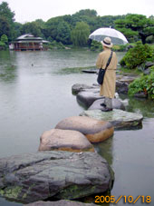
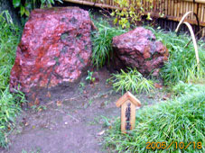
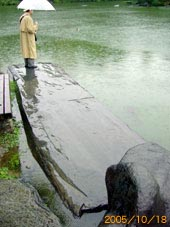
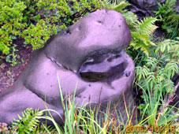
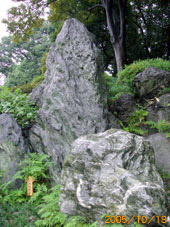

気象というものはときに、いや、往々にしてナンセンスである。十月も半ばも過ぎたというのに台風（20号）が接近しつつあるという。
晶文社のО君とは、すでにこの日に「清澄庭園」探訪のスケジュールどりがしてあったので、台風接近のため雨が降っていようが風が吹こうが、当然決行する。
前回の「前フリ」でも宣言したように、この『庭の味方』では、スケジュールを入れた日は、たとえその日が豪雨であれ、大雪であれ、また台風が来ようが"お庭拝見"に出かけることにしている。
地震のときは？ 津波とか火災が発生するほどでなければもちろん行く。どこかの庭園探訪中に、ある程度の震度の地震が来れば、ラッキー！ とすら思っている。池の水面の変化なんかも見たいしね。
と、いうことで、この日は台風接近のため雨。風も少々強い。第一回目の庭園探訪がちょっとした暴風雨とは……ツイている。運がいい。
О君の顔を思い浮かべる。多分、空を見上げて（庭園の取材なのに、この雨かあ）と吐息をついているにちがいない。
しかし、ぼくは内心シメシメと思っている、清澄庭園探訪にはおあつらえむきの雨ではないか。その理由はあとでわかる。
それに今回の庭園めぐりでは、ぼくは日頃の町歩きとは、まったくちがう心がまえで臨んでいる。
町歩きでは、地図を持たない。もちろんカメラなんか持たない。メモ帖は持っていたとしてもメモも、まずとらない。町歩きの醍醐味は「ただボーッと歩いて町の中で迷い子の気分になること」と思っているからだ。
しかし、この庭園探訪は、たかが都内の庭園散歩でも、ちょっとした山登りぐらいの気持ちの準備をしている。"お庭でもそぞろ歩く"などというナメた気持ちではない。気合いを入れてかからないと、かえって疲れることを知っているからだ。庭園とは、そういう"毒気"のある空間なのだ。
国土地理院発行の一万分の一の地図。江戸時代、また必要とあらば明治･大正･昭和初期の地図。カメラ。（今回、デジカメ購入。しかしまだ使えない）。メモ帖。そして双眼鏡。両手はなるべくあけておきたいので、肩から吊るすバッグ。ちょっとした雨程度なら傘が要らないコートと帽子。（や血糖値が下がったときのためのチョコレート。また、気が向いたら近くの銭湯に飛び込むための手ぬぐい、エトセトラ）。
ぼくにとっては、フルメタルジャケット的重装備。
とはいうものの、街歩きで中高年のオジサンハイキング姿は嫌なので、一見身軽る風ないでたちで地下鉄大江戸線･清澄白河駅から地上に出る。雨はさっきより本ぶりになってきているようだ。車は通るが、町を行く人の姿はない。ここから清澄庭園まではすぐ。三分ほどか。
しかし、足は逆方向に向く。ちょうど今、隣り町の東京都現代美術館で「イサム･ノグチ展」が開かれているのだ。イサム･ノグチには例の「エナジー･ヴォイド」と題する黒色の花崗岩を使った作品ほか、岩石を素材にした作品も多い。また、広場や庭園、公園、あるいは遊具といった仕事でも大きな足跡を残している。オブジェ作家のイサム･ノグチは世界的なレベルでの造園家でもある。
いいじゃないですか。イサム･ノグチの岩石作品と、岩石庭園･清澄庭園を同時に観るなんて。
●清澄庭園探訪は雨の日が"いいお日和"
清澄白河駅から雨の中、鼻歌をうたいながらゆっくり歩いてでも美術館まで三十分もあれば充分。雨に打たれて散ったモクセイの花の量に驚いたり、紀ノ国屋文左衛門ゆかりの寺などをチェックしながら、深川雨中散歩を楽しむ。雨が降っていて人も歩いていないので鼻歌どころか、ゴンチチがカバーした、ウクレレ『モスクワ郊外の夕べ』なんかも歌いながら歩く。かなり気分がいい。
雨に濡れながらも美術館につくと、平日の午後、しかも雨の日なのに来館者が多い。イサム･ノグチに関心を持っている人の多いことがわかる。
入ってすぐの、グアッシュ、紙の「パリの抽象」シリーズと題する一九二〇年代後半の作品に眼が行く。繊細な神経の作品だ。品がよくて、遊び心もある。欲しい、と思った。
もちろん、「エナジー･ヴォイド」もあった。でかい。高さが3，6メートル、重さは17トンという。台座のあたりをしきりにチェックしている若い女性がいた。この人も彫刻家なのかしら。
もっとも興味をそそられたのは「輪郭だけで作る遊び場の模型」や「ニューヨーク国連本部の遊び場の模型」あるいは今年の七月に完成グランドオープンした北海道･モエレ沼公園の模型（制作は一九九二年）だった。ぼくは、やっぱり元造園家だったのか。
あの、フリーダ･カロを寝取って、怒り狂った亭主のディエゴ･リベラに銃を向けられ逃げまわったという"勇者"イサム･ノグチ。
嵐山光三郎氏とメキシコへ行ったとき見た大キャンバスに描かれたディエゴ･リベラの作品や、フリーダ･カロ美術館の、小ぶりで感じのよかったことなどを思い出す。ついでに、ホテルやレストランでのヘタなマリアッチのバンドの騒音（へたくそなマリアッチの音、これは凶器である）まで思い出してしまった。
「イサム･ノグチ展」を後にして、清澄庭園に向かう。と、いうか来た道の一本左の道を戻る。左は隅田川の支流、仙台堀川。清澄庭園が造園されえた当初は、この仙台堀川から池の水を引き入れた"潮入り庭園"だったという。
つまり、潮の干潮によって、池の水面にも満ち引きが起きる。池の中にはボラやクラゲの姿も見えたにちがいない。
などと思っているうちに清澄庭園につく。時間は午後三時ちょっと前。平日の、それも雨とあって、人影なし。入園料一五〇円を払ってチケットを買う。ちなみに、いま見てきた「イサム･ノグチ展」は一三〇〇円だった。（常設展も含む）
三時ちょうど、О君到着。（「あいにくの雨で」）といいたいような顔をしている。
これがじつは"あいにく"じゃないんだよな。この雨は"いいお日和"なのだ、清澄庭園を観るのには。……理由は、すぐにわかる。
●雨に濡れると石は色めき語り出す
清澄庭園に入ると、目の前、ドカンと大きな棗（なつめ）形の手水鉢（ちょうずばち）に出くわす。熟れた柿のような色をした材は摂津御影である。って、ぼくは造園科を出たくせに日本庭園に関する知識はほとんど素人であるが故に、庭石のことなども無知に近い。いや無知である。なのに、この棗手水鉢が攝津御影、とこうして書けるのは、手水鉢の脇に説明書きの木札が立てられているから。
岩石展示場（ロック･フェスティバル？）の趣きすらある清澄庭園では、主だった石には産地を表示した木札が立てられている。親切だ。親切すぎる。
ところで、その岩石というか、庭石だが、これが、どれもじつに美しい。雨の日ならではの美しさなのだ。雨の日が、ここ清澄庭園を訪れるのに"あいにく"ではなく"いいお日和"という理由は、ここにある。
奇岩名石を誇る清澄庭園は雨中で観よ。
石は濡れると、石の本性を現す。語りだす。人の耳には聴こえぬほどのデリケートな音量で。スピーク･ロウ。
"石のようにだまったまま"という比喩は、乾いた石についてのことだろう。水に濡れた石は艶めき、咲きはじめ、唄い出す。
中国で硯を買うときなども店の人に水を用意させて、面を水で濡らし、指でさわって硯のツルリとした肌の味をチェックする。石はエロティックですね。
●海運業の雄･岩崎一族ならではの石集め？
庭の一隅に、一瞬、ツツジでも咲いているのかと思った。いや、石だ。しかし、紅い。雨に濡れてテラテラと紅い。これが佐渡の赤玉石か。（＊本文末の写真参照）
佐渡の乗船場の売店で佐渡赤玉石で作ったというお猪口なんかが売っているというが、この庭の赤玉石ならお猪口が何個ぐらい作れるのだろう。いや、たしか、この佐渡赤玉石、今は採取が禁止されているはずだ。
庭石愛好家なら涎を流すシロモノにちがいない、この佐渡赤玉石、新潟の資産家の屋敷に据えられていたものを明治期、全国の庭石を集めてリニューアルした岩崎家が買い取ったものという。
そういえば、この清澄庭園のパンフレット的概要説明をまったくしていなかった。
清澄庭園は江戸の豪商･紀文、紀伊国屋文左衛門の屋敷跡と伝えられる（確証はない）が、享保年間（一七一六〜一七三六年）久世大和守（下総国、関宿の城主）の下屋敷となり造園される。いわゆる大名屋敷である。明治維新によってこの庭も荒れたままとなるが、明治十三年、海運業と軍需工業で成功した岩崎彌太郎によってゲストハウスの庭園として整備されリニューアルオープンする。
しかも、彌太郎の生きているあいだには、この庭園は完成を見ることなく、彼の弟･三菱二代目の彌之助、そして三代の久弥がその志をうけつぐこととなる。庭造りの情熱（狂気）は往々にして、その人の代では終わらない。
ところで、全国から、これぞと思う岩石をこれだけ集めてこられたのも、思えば、岩崎家が海運業だったからにちがいない。船での運搬ならお手のものだろう。大きく、重い石ならいっそう、その技術の見せどころでもあったかもしれない。
巨大な岩に目をむき、多分、呆れながらも、それらを運搬する彼ら庭師と海運業の連中の張り切りぶりが目に浮かぶ。
庭づくりのきっかけだが、岩崎彌太郎は、ある時、招かれて加賀藩前田家の江戸屋敷（現在の東大構内）の深山幽谷を思わせる庭（もちろん、これも大名庭園）を見せられる。そのときに、"よし自分も"と思ったという。
前田家が深山幽谷か、それなら、こちらはもともと潮入り庭園、豪快な海をイメージさせる、それも穏やかな湾･入江ではなく、荒磯を思わせる庭を造ってみせる、と思い立った、というのはぼくの勝手な想像なのだが、これは当らずとも遠からずではないだろうか。
●お庭拝見ならぬお庭愛撫
実際、この日は雨が降っていることもあり、池の面には小波が起き、池の周囲の岩々のすそを洗っている。
これは畳にしたら何畳敷きの大きさになるのだろうか、平たい仙台井内石の舟付石（というより船付場だ）の面すれすれまで池の水が迫っている。
この石の上に乗ると、なにか、水面に乗ってしまったような危うさ、というか、一種独特の浮遊感に襲われる。びくびくしながらも水の中をのぞくとバカでかい鯉が人の足音を聞きつけてか三匹、四匹と近寄ってくる。水面ぎりぎりまでやってくると、もうちょっとで雨に濡れた舟付石の上まで乗っかけてきそうに見える。
沢渡り、磯渡り、大渡りともいうか、まるで磯浜を渡るように並べられた岩のうち、伊予青石の海の色を思わせる青色が、とくにすばらしい。思わず石の面を撫でてみたくなる。
お庭拝見、ならぬお庭愛撫。ひと気のない雨の清澄庭園だからこそ可能な密やかな庭の味わい方である。お望みとあれば頬づりをしてもかまわない。いつもなら他人行儀の庭園と自分との関係が、ぐっと近くなる。
それにしても、この清澄庭園に立っていると、さっき見てきたイサム･ノグチの作品が、あまりにデリケートに思えてくる。彼の作品は、優しい。これに対し、清澄庭園は「どうだ！ すごいだろう」という自慢と豪快な趣向がある。海の干満が引き入れられていた潮入り庭園だったころは、今よりも、もっとその気配は濃厚だったろう。
東都の下町･深川の地に"荒磯"の景観を運び移す。海運業で巨万の富を得た岩崎氏の"海をテーマ"とした途方もない岩石のコレクションによる作品が、この清澄庭園だったのではないだろうか。
全国各地の庭石となる岩石を、あちこちさがし求め、数知れぬ、それも巨岩を掘りおこし、運び移し、そして、庭園に一つ一つ据えてゆく。このために要した時間や人の労力を想像してみると、自ずと、ジワッと笑いがこみ上げてくる。
あまりにも野放図な企てではないか。
今日の清澄庭園はゆきとどき、しっとりと落ち着いた風情である。しかし、この庭には阿房宮の美しき後宮三千人ならぬ、全国各地の奇岩怪石･数十種、数千個（？）が集められ、静に侍（はべ）っている。いわば岩石のハーレム。もちろん本来ならば一般に公開されるような空間ではない。
私園は秘園である。それが公園となってこうして、たったの150円でわれわれも立ち入れ、勝手気ままに庭内をめぐり歩くことができる。
いつのまにか雨がやみ、人影もポツリポツリと見える。人の姿があると、庭園全体の景観が少し引き締まったように感じる。夕暮れも近い。無数の岩石と池と池の中の鯉を置いたまま、この庭を去る。
☆ ☆ ☆
庭園の中を歩いた"毒消し"のため、О君と門前仲町をめざす。まだ五時前だが、深川不動向かいの「魚三酒場」ならやっている。しかし、今日は（この時間なら入れるかも！）と思い、辰巳新道入口脇、牛にこみの「大阪屋」をのぞく。ちょうど二人分の席があった。
初老の客に話しかけられ、イサム･ノグチ展へ行ってきた、というとその客、「イサム･ノグチのモエレ沼公園、この夏行きたかったんだが腰を痛めて」とすぐに反応。と、別の客が「李香蘭（山口淑子）と結婚してたんだよね」とイサム･ノグチにかなりくわしい。
平日の五時前から、にこみの焼酎を飲んでいて、イサム･ノグチの事情に通じている、この仲町のオッサン方、どういう人生を送ってきた人種なんだ。話がややこしくなりそうなので、清澄庭園に行ったことはしゃべらず、にこみを二本づつ追加して切り上げ、新道の中にあるツクネがメチャうまい店に移動する。
体の中には雨に濡れた庭石のあれこれや、たっぷりと水をたたえた池のボリュームの気配が残っている。しかし、疲労感はまったくない。やはり、これは雨のおかげと思う。人がほとんどいなかったのもよかった。
清澄庭園には、一度は雨中に訪れるべきだろう。そして、雨に濡れて艶めく庭石を見てあげるべきだろう。でも、もし、この庭をあなたにあげよう、といわれたら、すぐに売却してもいいのなら別だが、タダでも断るだろう。あんなに、日本各地の岩石がひしめき合っているような空間を所有するなんて、ぼくの脆弱な、いや正常な神経では耐えられないにきまっている。
岩崎彌太郎、そして、その遺志を引きついで庭造りをした弟の岩崎彌之助、長男の久彌、この三人はどんな生理、また心理の持ち主だったのだろう。
庭園を見ると、その庭を造った人の心の内をのぞいてみたい、といつも思う。
さて、次は冬の夜の庭園へまぎれこもう。
 |
 |
| 清澄庭園雨中 |
遠くから見たらツツジがさいているのかと。佐渡赤玉石 |
 |
 |
| 舟付石は巨大な仙台井内石。これが池の中で浮いているよう |
なにかコビトカバのようなグロテスクな肌合いの巨石も |
 |
| 巨大な紀州青石。ひょっとして陰陽のシンボルか |
|